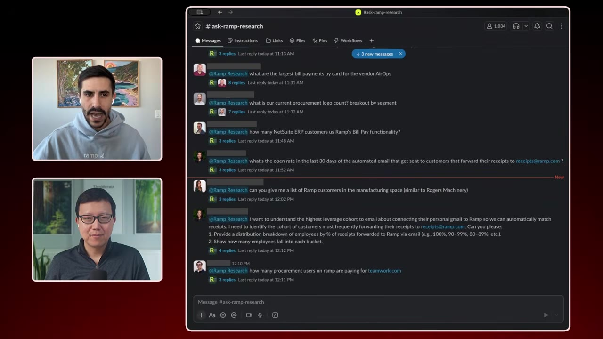
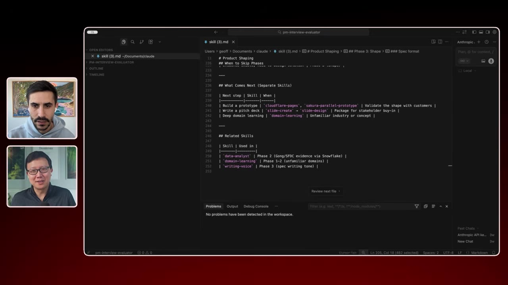
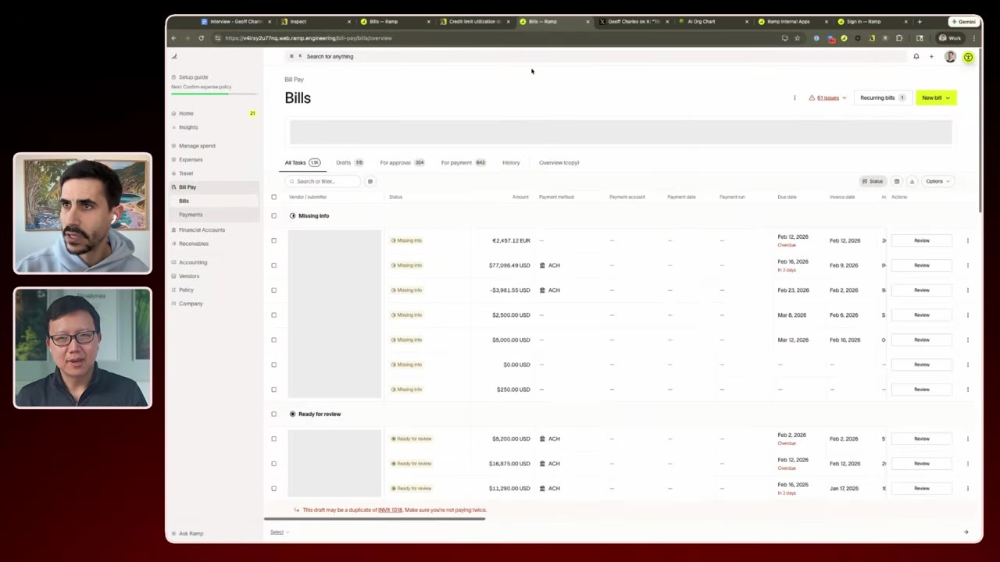

Ramp's CPO Jeff describes how the company uses Claude Code, custom AI agents, and internal tools to ship 500+ features with 25 PMs — with 50% of code now generated by AI. He covers their entire product development workflow, from customer research to releases, and why PMs should optimize for building, not management.
Watch on YouTubeRamp is one of the fastest-growing companies ever — $1B in revenue, 500+ features shipped last year, all with around 25 PMs. Jeff, CPO of Ramp, says 50% of their code is now built by AI, up from 30% in December.
"You know, I've worked at a lot of big tech companies, but the way that we are building has always been around velocity. And the way that you move fast is by leveraging tools and AI is just an incredible accelerant to everything that we do."
The cost of code is "basically down to almost zero apart from the tokens." PMs are now writing specs for AI agents, not engineers — a complete shift in product development.
We've hit coding escape velocity and it's a brave new world out there.— Jeff, CPO of Ramp
Before any spec, Ramp needs to understand customer pain points. They used to hire a person to sift through Gong recordings, Salesforce notes, support tickets, in-app surveys, and email. Now it's an AI agent.
The "Voice of the Customer" agent answers any question about a persona's pain points, workflows, and product gaps — pulling from all customer touchpoints simultaneously.
"It literally went through 90 days of support tickets and chat logs and identified the actual key topics that we need to focus on — purchase order management, approval flow routing, chat understanding with Ramp Assist, exports, currency constraints. This was done in about 8 minutes. Something that would have taken 8 days for a human."
The agent is hosted in Slack (or DM-able), making it feel like a co-worker. You can drill deeper: "Bring customer quotes," "Bring me log rocket sessions," "Create an email I can send to book meetings."
Six months ago, Ramp launched "Ramp Research" — a bot for data analysis. Now it's already outdated. The new approach: Snowflake CLI + Claude + skills.
They've built a database of Claude skills, including a data analyst skill that fully understands their database schema and analytics best practices. Instead of asking a question, you tell Claude your goal and it figures out the rest.
"Sometimes you ask the question and you get the result, but you should just tell AI what your goal is. And you'll actually be surprised at the questions that the AI can actually ask themselves to get to the goal."

The tool is used by everyone: sales people looking up customer data, support figuring out product usage patterns, marketers analyzing campaign performance.
"By making it easier for people to ask questions about data, you actually increase the number of people who actually ask questions about data. And you actually become more data-centric as a company."
The old PM craft was the "perfect spec." Now the spec is "basically the output of a prompt." The workflow: prompt → product → prompt → product.
Ramp has Claude skills that act as a spec reviewer — a conversation-based approach where Claude asks clarifying questions, surfaces trade-offs, looks up data, reviews competitors, and checks customer evidence. It has full Notion context: all research, personas, and past projects.

"We don't really talk about the spec itself. That's just a step in the process. We talk about the actual product."
The key shift: you no longer need to write the spec. You need to be in the product itself, testing it, playing with it, and iterating.
Ramp's AI coding tool, Inspect (built on top of Claude Code), understands the full codebase and design system. PMs can describe a feature in plain English and get a working product — front-end and back-end.
"All I need to do is I will go in and say, 'Please build me a report on top of this table that has four metrics: my overdue paint, my overdue bills, my upcoming bills, 0 to 30 days, 30 to 90 days, and the total amount outstanding.' This took 5 minutes. And this is not just a front-end prototype — this is the real product."

"50% of Ramp's code is built by AI. That's 50% up from 30% in December. It'll probably be 80% by March. And it's not inconceivable for it to be 90 to 100%."
Even non-engineers ship: PMs, designers, operators, account managers — and the #1 users are still engineers.
With so many people shipping code, how does Ramp maintain quality?
"We obsess over customer feedback. Anytime there's a support ticket where someone is confused, we have Inspect basically run through that and recommend changes and have the PR up and ready."
The leader's role shifts: when you catch a poor UX, don't just fix it — figure out what broke down in the process so it never happens again.
"My job is to automate my job. And our all our jobs is to automate our jobs."
The PM role is bifurcating in two directions:
1. Builders. Code is free, so the craft of building becomes essential. PMs who can prototype and iterate quickly will outperform those stuck writing specs.
2. Business strategists (GM mindset). Engineers and designers build great products. PMs need to focus on: how are we competing? positioning? distribution? monetization? how do we win long-term?
"A lot of what a lot of PMs join product management for is because it's a safe job. You might not be good enough at the engineering task or the design task, but you're really good at stakeholder management and communication. Those are all outdated because code is free."
Planning horizons have shrunk: Ramp plans only 3 months ahead. "Within 3 months you can do what you could do in 3 years now." The three objectives of planning are: aligning on strategy, team commitment, and giving sales basic assets — all of which are automated.
Ramp's framework for AI proficiency has four levels:
| Level | Description |
|---|---|
| L0 | Sometimes uses ChatGPT |
| L1 | Builds custom GPTs, Notion agents, uses Claude Code |
| L2 | Has built an app that automates part of their job; has committed code or feedback |
| L3 | Fundamental systems builder |
Getting everyone up the ladder: public Slack channels showcasing what people built, removing all access constraints, office hours, designated "evangelist" experts, and showcasing non-builders (finance building treasury management, legal doing contract reviews).
Hiring requires AI proficiency — the product team interview includes building a full prototype. They track token usage across Notion AI, ChatGPT, Claude Code, and Inspect for everyone in the company.
"Token consumption per employee is not even close to double digits [dollars]. It's not unreasonable to think that it should be higher than your salary. Because if you have agents that are able to do 10 times more work than you, why would you not pay them twice as much?"
L0 folks will most likely leave on their own — "you can tell them as much as possible. If you're not a self-starter, it's going to be very hard to train you."
The deepest insight of the conversation: fundamentally, software is dead. Products will look more like coworkers than tables, charts, and workflows.
"If you haven't used coworkers in your own job, you don't understand how it might look like your product a lot more than you think. You don't have to process it."
At Ramp, they track time spent in Ramp and try to reduce it — the opposite of the FAANG engagement model. A login screen in the future is a failure. Products should do the job for you, not just give you tools to do it yourself.
"Domain-level expertise is key. If you're actually going to do the job of your customer so that they can do other things, you need to deeply understand that philosophy or be able to extract that knowledge."
Software is dead. It's all going to be like coworkers. If you haven't used coworkers in your own job, you don't understand how it actually might look like your product a lot more than you think.— Jeff, CPO of Ramp